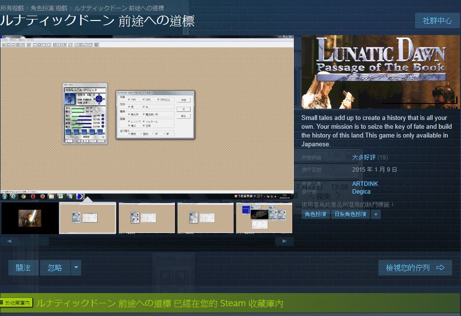
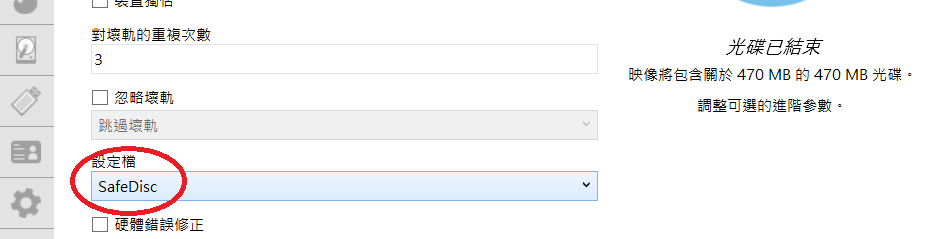
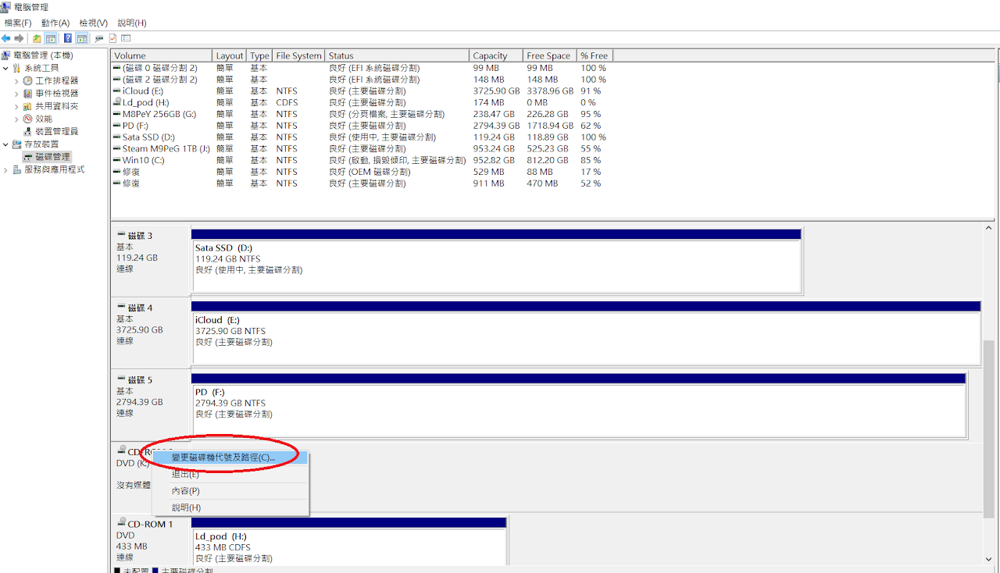

[ STEAM 版前途道標中文化方法 ]
一、先至Steam購買前途道標
二、如果你沒有前途道標的實體光碟，那就下載這個檔案解壓縮至遊戲資料夾內覆蓋原檔即可。
(至於遊戲內的背景音樂，在Steam的前途道標遊戲資料夾內，裡面的music資料夾就是原本的光碟音樂，直接設播放清單播放即可)
三、如果你有前途道標的實體光碟，可以選擇保護自己的實體光碟，先用DAEMON Tools Lite 10製作好虛擬光碟。
四、記得虛擬光碟的磁碟代號要在實體光碟機的前面
(簡單來說就是所有光碟機的代號裡，虛擬光碟機要是第一個)。
五、再來下載這個檔案至遊戲資料夾內覆蓋原檔即可。
[ 教學截圖 ]


